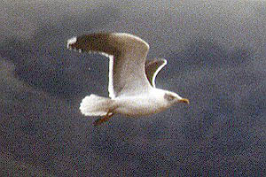

These photographs accompany records that have been recently submitted to the committee. This record has been ACCEPTED.

Lesser Black-backed Gull
Larus fuscus
14 Jan 97, Alviso, SCL 1997-002
© 1997 Stephen C. Rottenborn
Back to CBRC Rare Bird Photos